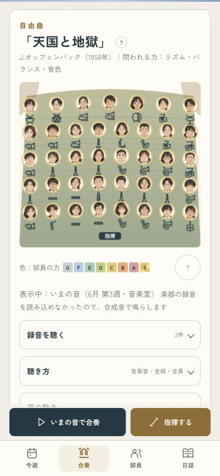
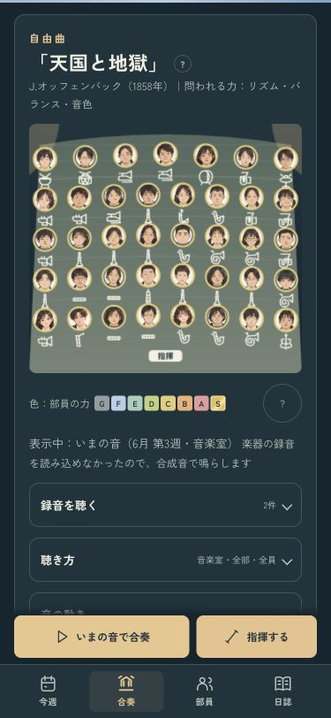
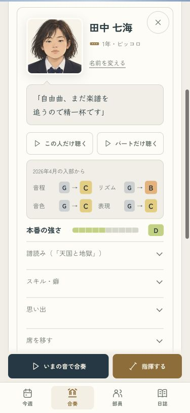
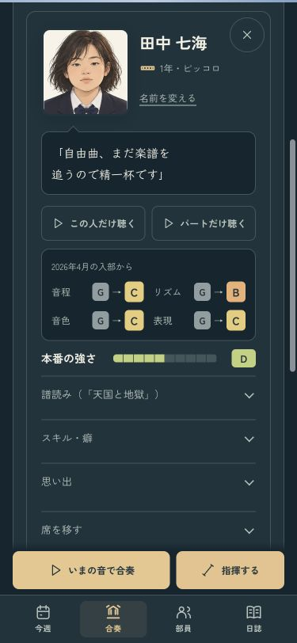
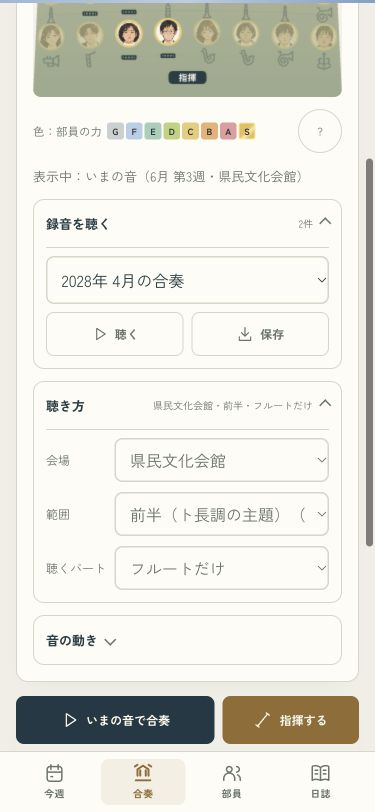
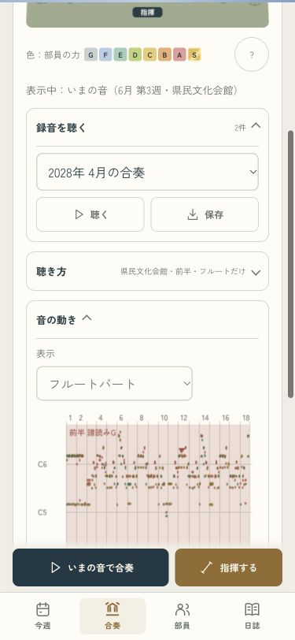

顔を見ながら、合奏を聴く
「いまの音で合奏」「止める」「指揮する」を、画面の下からいつでも押せる形に。舞台で選んだ部員のカードをすぐ下に出し、録音・聴き方・音の動きは必要なときに開けるようにしました。
確認用の画面です。いつものセーブや設定は書き換えません。
舞台と聴く操作を近くに · 375px
部員の顔と楽器はそのまま。会場・範囲・聴くパートは、閉じた「聴き方」の見出しでも分かります。音を読み込み中も「止める」から取り消せます。
ライト
ダーク
気になる部員をすぐ見る · 375px
舞台の顔を押すと、その子のカードへ。本人やパートの音を聴いたり、名前を変えたりできます。閉じると舞台へ戻ります。
ライト
ダーク
聴き方や音の動きは、必要なときに
古い録音を選んだあとに部員を見ても、録音の選択を保ちます。音の動きは開いたときだけ描き、閉じている間の描画を減らしました。
会場・範囲・聴くパート
音の動き